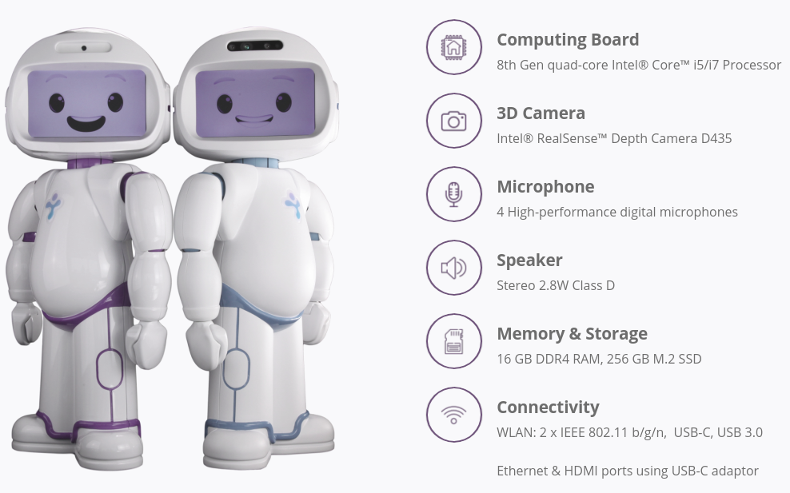

Developer Guide¶
Welcome to Developer Guide. Here you can find all tutorials and demos for our QTrobot.
What is QTrobot?¶
QTrobot, is a commercial available toddler-like humanoid robot built by LuxAI S.A. It is a socially engaging and interactive robot with a wide areas of application. QTrobot is currently being used for emotional training of children with autism, post-stroke rehabilitation and elderly cognitive and physical rehabilitation.

Getting Started¶
In the following sections you will find different way of programing QTrobot.
Programming on the QTrobot¶
QTrobot comes with an internal high-performance Intel NUC running Ubuntu 16.04 LTS operating system. Programming QTrobot is as easy as doing on your desktop PC. Just connect a keyboard/mouse and monitor to the robot and Voila !
Programming on your PC¶
Warning
You don NOT need this installation if you are programming directly on the QTrobot.
1. Installing ROS¶
The following steps guide you through the installation of ROS Kinetic. For the complete installation guide of ROS see Install ROS
Notice
Please notice that QTrobot can be used with other versions of ROS such as Lunar and Melodic.
Installing ROS
1. Configure your Ubuntu repositories
You need to configure your Ubuntu repositories to allow "restricted" "universe" and "multiverse". You can check Ubuntu documentation for doing this.
2. Setup your sources.list
Setup your computer to accept software from packages.ros.org.
sudo sh -c 'echo "deb http://packages.ros.org/ros/ubuntu $(lsb_release -sc) main" > /etc/apt/sources.list.d/ros-latest.list'
sudo apt-key adv --keyserver 'hkp://keyserver.ubuntu.com:80' --recv-key C1CF6E31E6BADE8868B172B4F42ED6FBAB17C654
4. Install
Now you can update and install ros-kinetic-desktop-full
sudo apt-get update && sudo apt-get install ros-kinetic-desktop-full
5. Setup Catkin workspace
source /opt/ros/kinetic/setup.bash
mkdir -p ~/catkin_ws/src && cd ~/catkin_ws/ && catkin_make
2. Configure ROS environment for QTrobot¶
The following steps guide you through the configuration of your ROS environment for QTrobot.
ROS environment for QTrobot
You need to edit your ~/.bash_aliases and add following lines. Change ROS_IP to your PC IP.
source /opt/ros/kinetic/setup.bash source ~/catkin_ws/devel/setup.bash ## QTrobot export ROS_IP=<your PC IP address> export ROS_MASTER_URI=http://192.168.100.1:11311
Which is my IP address ? To get your IP address, First you need to connect to the QTrobot WiFi hotspot. Then open a terminal on your PC and run the following command:
ifconfig
To apply this configuration you can open a new terminal or run this command:
source ~/.bash_aliases
3. Check your ROS setup¶
Last step is to connect to the QTrobot WiFi hotspot and test your ROS environment.
Test
To test your environment you can list all rostopics from QTrobot. You can do that with running this command.
rostopic list
/rosout /qt_robot/audio/play /qt_robot/behavior/talkAudio /qt_robot/emotion/show /qt_robot/gesture/play /qt_robot/head_position/command /qt_robot/joints/state ...
Now you can start having fun. 
Connect to QTrobot via ssh¶
Your QTrobot comes with two integrated computers both running Ubuntu 16.04 LTS operating system.
- QTROBOT (ARM Cortex-A53): This is the embedded computer of QTrobot which runs the robot main software such as motors controller, gestures, emotions and implement most of the ROS interfaces. The ROS server is running on this machine.
- QTPC (Intel NUC i5): This is the high-performance computer of the robot which allows you to develop and run your high computational codes. QTPC is connected to QTROBOT via LAN and communicates to all robot modules using ROS. This machine also implements some of the QTrobot ROS interfaces such as 3D camera images.
Accessing QTPC via SSH
After connecting to the robot WIFI hotspot, open a terminal from your PC and SSH to the robot using IP 192.168.100.2.
ssh qtrobot@192.168.100.2
qtrobot@qt's password:*******